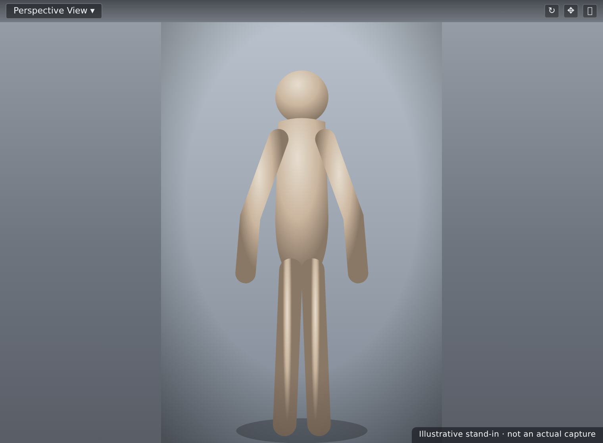
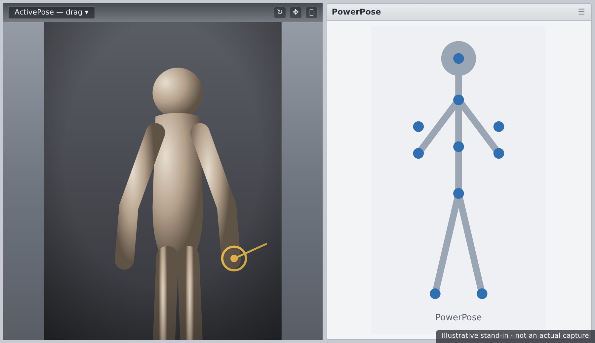

🧍 Lesson 2.1: Loading & Posing Genesis Figures
This is the moment Daz starts to feel like magic. You'll put a real Genesis figure on the stage, drop it into a finished pose with a single click, then learn to bend it to your will by hand — bone by bone. Posing is the skill that separates stiff, default-looking renders from images with life in them, and it starts here.
🎯 Learning Objectives
By the end of this lesson, you will be able to:
- Load a Genesis 8 (or 9) base figure into an empty scene
- Apply pose presets and understand what they do (and don't) change
- Use ActivePose and PowerPose to pose by dragging directly on the figure
- Rotate individual bones with the Universal tool and the Parameters dials
- Pin hands or feet so limbs stay put while you adjust the rest
- Save your own pose as a reusable preset
Estimated Time: 55 minutes
Project: A Genesis figure loaded and posed into a natural, standing-with-attitude pose — saved as your first custom pose preset.
In This Lesson
Meet Genesis
Everything you'll pose, shape, and render in this course is built on the Genesis figure — Daz's flagship, rigged human base. Before we move it, it helps to know what it actually is.
💡 The one-sentence version: A Genesis figure is a single rigged 3D human whose skeleton of bones lets you pose it, and whose morphs let you reshape it — one base that can become almost anyone.
| Generation | What It Is | Use It When |
|---|---|---|
| Genesis 8 | The most widely supported generation — enormous free and paid content library | Default for this course; the safe choice for compatibility |
| Genesis 9 | The newest base — a unified figure with updated topology and rigging | You want the latest tech and have (or will buy) G9 content |
📖 Definition
Rig / skeleton: the hidden framework of bones inside a figure. When you "pose," you're rotating those bones, and the skin mesh follows. Genesis figures come pre-rigged, so you never build a skeleton — you just move it.
⚠️ Important Note: Poses are generation-specific. A pose built for Genesis 8 won't drop cleanly onto Genesis 9 (their skeletons differ). Match your pose presets to your figure's generation, or use a pose-converter product. We'll stick with Genesis 8 so everything just works.
Loading a Figure
Loading is a double-click — but knowing where to click, and what happens, saves confusion.
The steps
- Start with an empty scene (File → New).
- Open Smart Content (or the Content Library). In the Content Library, browse to
People → Genesis 8 → Genesis 8 Female(or Male). - Double-click the base figure icon (often named "Genesis 8 Female" / "Genesis 8 Basic Female"). The figure appears in the viewport, standing in its default T-ish "A-pose."
- Press F to Frame it so it fills the view.
💡 The default pose
A freshly loaded Genesis figure stands in a neutral A-pose — arms slightly out, feet apart. This is the clean starting point every pose builds from. It's deliberately generic so morphs and clothing fit predictably; your job is to give it life.

⚠️ Important Note: If double-clicking a pose or material seems to do nothing, check that the figure is selected in the Scene pane first. Poses and materials apply to the current selection — the same "select the node first" rule from Lesson 1.3.
Pose Presets: Instant Poses
The fastest way to a good pose is to not make one at all — pose presets are finished poses saved by other artists. With your figure selected, double-click a pose preset and the whole body snaps into place.
📖 Definition
Pose preset: a saved set of bone rotations that positions an entire figure (or just a part, like hands) in one click. Presets are the backbone of fast posing — start from one that's close, then tweak by hand rather than posing from scratch.
Applying and blending
- Whole-body presets pose everything at once. Select the figure, double-click the preset.
- Partial presets pose only a region — hands, face, or feet — and layer nicely on top of a body pose.
- Applied a pose you don't like? Just apply another; poses overwrite each other. Or undo with Ctrl+Z.
✅ Pro Tip — start close, then customize
Even professionals rarely pose from a T-pose. Load the preset nearest to what you want, then adjust a few bones (Section 5). "80% from a preset, 20% by hand" is faster and looks better than posing every joint yourself.
Here's the posing workflow at a glance — the path most poses actually take:
⚠️ Important Note: A pose preset changes bone rotations, not the figure's shape, materials, or clothing. If a preset seems to "do nothing," it may be a partial pose (e.g. hands only) or aimed at a different generation. Match generation and confirm your figure is selected.
ActivePose & PowerPose
Sometimes you want to grab the figure and just move it. Daz gives you two tools for direct, drag-to-pose interaction.
| Tool | What It Does | Best For |
|---|---|---|
| ActivePose | Drag directly on the figure in the viewport; nearby bones move together with basic inverse kinematics (IK) | Quick, natural gestures — pull a hand and the arm follows |
| PowerPose | A flat, puppet-like control map of the figure; click a region and rotate it with on-screen handles | Precise, region-by-region posing without hunting for bones in 3D |
📖 Definition
Inverse kinematics (IK): pose math that lets you move an end point (like a hand) and have the connected chain (forearm, upper arm) rotate automatically to follow. ActivePose uses light IK so dragging a limb feels natural instead of moving one bone at a time.
💡 Finding the tools
Select the ActivePose tool from the Tools menu (or the toolbar), then drag on the figure. Open PowerPose from Window → Panes (Tabs) → PowerPose; its puppet map appears as a pane you click and drag. Both work on the currently selected figure.

⚠️ Important Note: ActivePose's IK is convenient but can over-rotate a whole chain when you only meant to nudge a wrist. If a drag moves too much, undo and either drag more gently or switch to selecting the single bone and rotating it (Section 5).
Manual Posing with Bones
For full control, pose one bone at a time. This is the bedrock skill — every other method is a shortcut on top of it.
Two ways to rotate a bone
- In the viewport with the Universal / Rotate tool: select a bone (click it, or expand the figure in the Scene pane and pick it there), and drag the colored rotation rings that appear around it. Each ring rotates one axis.
- In the Parameters pane: with a bone selected, use dials like Bend, Twist, and Side-Side to type or drag exact values. Precise and repeatable.
📖 Definition
Bend / Twist / Side-Side: the three rotation dials most bones expose. Bend flexes the joint (an elbow closing), Twist rotates along the limb's length (turning a forearm), and Side-Side swings it sideways. Together they describe any joint rotation.
✅ Pro Tip — respect the joint limits
Genesis bones ship with limits that stop joints bending into anatomically impossible angles. Leave limits on while learning — they keep poses believable. If a pose genuinely needs an extreme angle, you can turn a dial's limit off from its menu, but that's the exception, not the rule.
💡 Select the right bone, not the mesh
Clicking the figure in the viewport selects a bone under the cursor — but overlapping geometry can grab the wrong one. When in doubt, expand the figure in the Scene pane and click the exact bone (e.g. rForearmBend). The Parameters dials then apply to precisely that joint.
⚠️ Important Note: Rotating the hip bone moves the whole figure, since it's near the root of the skeleton. To move just an arm, select an arm bone — not the hip. Understanding the hierarchy (Lesson 1.3's Scene pane) pays off directly here.
Pinning & Zeroing
Two small features prevent most posing frustration: pinning to lock parts in place, and zeroing to start clean.
Pinning
A pin tells Daz "keep this node where it is" while you move other things. Pin a hand to a tabletop and it stays planted as you adjust the torso. Pin both feet so the figure doesn't slide while you pose the upper body.
- Pin from the Scene pane (right-click a node → Node Pinning) or via the ActivePose tool's options.
- Pins work hand-in-hand with IK: with a hand pinned, dragging the shoulder bends the arm to keep the hand put.
- Remember to unpin when you're done — a forgotten pin causes "why won't this limb move?" puzzles.
Zeroing
To wipe a pose and return to the neutral A-pose, select the figure and use Edit → Zero → Zero Figure Pose. To reset a single bone, right-click its dial and choose Zero. Zeroing is your reliable "start over" button.
✅ Pro Tip — pin the feet before anything else
A classic workflow: load the figure, pin both feet, then pose. The figure stays grounded instead of drifting or floating as you rotate the hips and spine. Small habit, big time-saver — especially for standing poses.
⚠️ Important Note: Zeroing the figure pose removes all posing, including any preset you applied — but it does not undo morphs or materials. It's specifically a pose reset. If you want to keep a pose you like, save it first (next section).
Saving Your Own Pose
Once you've built a pose worth keeping, save it as a pose preset so you can reapply it to any compatible figure, in any scene, forever.
The steps
- Select the posed figure.
- Go to File → Save As → Pose Preset…
- Choose a folder inside your content library (e.g. a
My Posesfolder), name it clearly, and save. - In the save dialog you can choose what to include — whole body, or only certain nodes/properties. For a full pose, accept the defaults.
📖 Definition
Pose Preset (.duf): a small file storing the bone rotations you saved. It contains no mesh — just the numbers needed to reproduce the pose — so it's tiny and reusable across figures of the same generation.
💡 Save selectively for reusable partials
The save dialog lets you include only certain nodes. Pose a great hand gesture, save just the hand bones, and you've made a reusable partial pose you can layer onto any future figure. Building a small personal library of hands, feet, and expressions speeds up every project.
⚠️ Important Note: Save your pose into a folder that's inside a mapped content directory (Lesson 1.2). Save it somewhere Daz doesn't scan and it won't appear in your content panes — the file's fine, it's just not where the app is looking.
Hands-on: Pose a Figure
Time to put it together: load a figure, pose it three ways, and save the result as your first custom preset.
🏋️ Exercise 1: Load & Preset
Objective: Get a figure on stage and into a starting pose.
Steps:
- File → New, then load a Genesis 8 figure from the Content Library. Press F to frame it.
- With the figure selected, apply a full-body pose preset from the Starter Essentials (or any pose you own). Watch the whole figure snap into place.
- Apply a second preset to see how poses overwrite each other, then Ctrl+Z back to the one you preferred.
🏋️ Exercise 2: Adjust by Hand
Objective: Customize the preset with manual bone rotation and pinning.
Steps:
- Pin both feet (Scene pane → right-click each foot → Node Pinning) so the figure stays grounded.
- Expand the figure in the Scene pane, select a forearm bone, and use the Parameters Bend dial to adjust the arm.
- Tilt the head slightly with its Side-Side and Bend dials to add life. Try the ActivePose tool to nudge a hand and feel the IK.
- Unpin the feet when the pose reads naturally.
💡 Hint — a limb won't move no matter what I do
You've almost certainly left a pin on it (or on a connected node). Check the Scene pane for pinned nodes and remove the pin. Pins are the number-one cause of "stuck" limbs — including the very feet you pinned in step 1.
🏋️ Exercise 3: Save Your Pose
Objective: Bank your work as a reusable preset.
Steps:
- With the figure selected, choose File → Save As → Pose Preset…
- Save it into a
My Posesfolder inside your content library, named something likeStanding Confident 01. - Load a fresh Genesis 8 figure and apply your saved preset to prove it works. Congratulations — that's a complete pose workflow.
🎯 Quick Quiz
Question 1: You apply a Genesis 8 pose preset to a Genesis 9 figure and it looks broken. Why?
Question 2: A limb refuses to move no matter which dial you drag. What's the most likely cause?
Question 3: What does a saved Pose Preset (.duf) actually store?
Best Practices
✅ Do's
- Start from a preset that's close, then refine by hand — faster and better than posing from the A-pose.
- Pin the feet before posing a standing figure so it stays grounded.
- Select the exact bone in the Scene pane when the viewport grabs the wrong one.
- Leave joint limits on while learning to keep poses anatomically believable.
❌ Don'ts
- Don't mix pose generations — keep G8 poses on G8 figures unless you're using a converter.
- Don't forget to unpin — a stray pin is the top cause of "stuck" limbs.
- Don't rotate the hip when you mean an arm — the hip moves the whole figure.
💡 Pro Tips
- Build a small personal library of partial poses — hands, feet, head tilts — and layer them onto future figures.
- Zero Figure Pose is your safe "undo everything" for posing; use it freely to experiment.
- Type exact values into Bend/Twist/Side-Side dials when you need a pose to be repeatable across shots.
Summary
🎉 Key Takeaways
- A Genesis figure is a pre-rigged human; posing means rotating its bones, and poses are generation-specific.
- Load a figure by double-clicking it; it arrives in a neutral A-pose ready to work.
- Pose presets give instant, finished poses — start from the closest one and customize.
- ActivePose and PowerPose let you drag to pose; manual bone rotation (Bend/Twist/Side-Side) gives full control.
- Pin hands/feet to lock them, zero to start over, and save a Pose Preset to reuse your work.
📚 Additional Resources
- Posing figures — official Daz user guide
- The PowerPose pane — Daz documentation
- About the Genesis 8 figure
🚀 What's Next?
Your figure can now strike any pose you like. But it still looks like the default person. In Lesson 2.2 — Shaping Characters with Morphs, we change who the figure is — sculpting the face and body with morph dials to turn the generic base into a distinct character of your own.
🎉 You're posing!
From double-click to a saved, custom pose — you've done the thing that makes Daz feel alive. Every render from here starts with a pose you now know how to build. Next, let's make the figure truly yours.